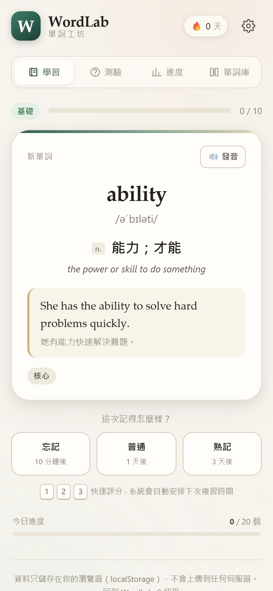
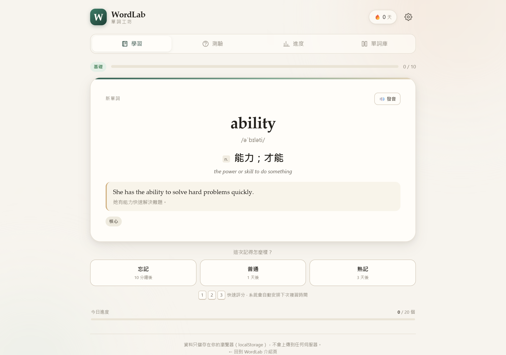
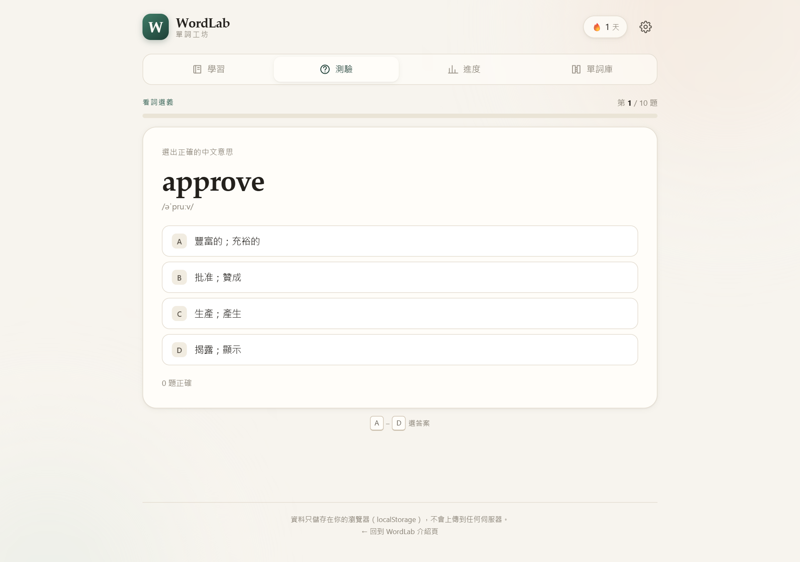
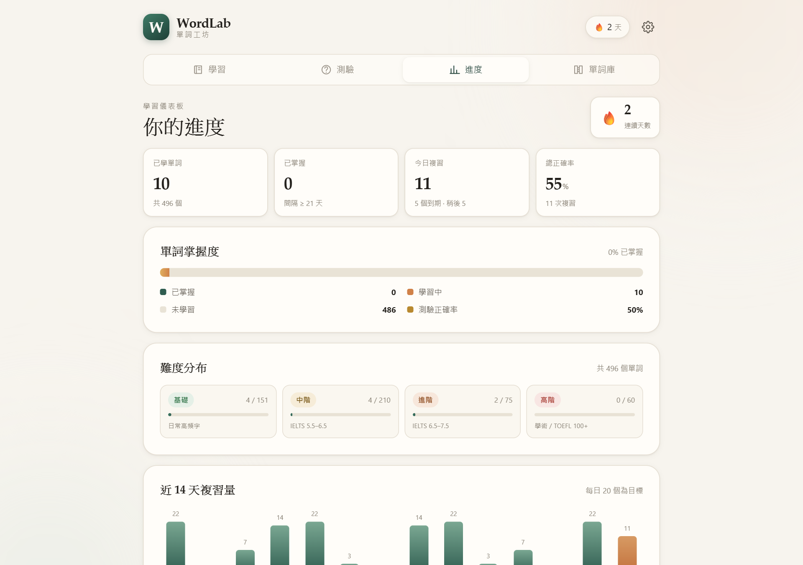
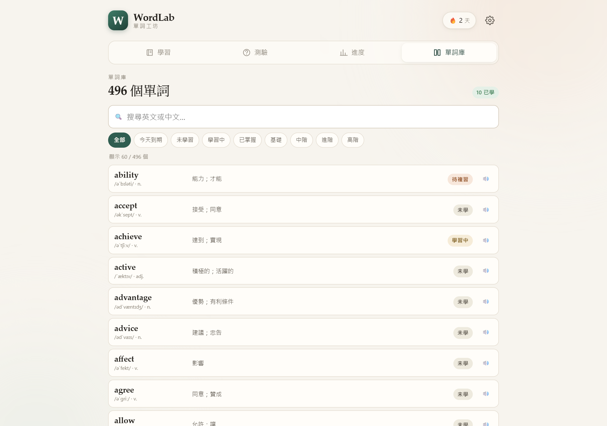

一次背太多，複習卻很少
一天硬塞五十個新詞，兩天後只剩下幾個。沒有複習排程，等於每次都要從零開始。
間隔重複 × 主動回想 × 自動出題
WordLab 是一套在瀏覽器就能用的英文單詞學習系統。它依你的記憶曲線安排複習， 用五種測驗確認你真的記住，並把每一次學習完整記錄下來—— 毋須註冊，資料不離開你的裝置。

常見困境
問題通常不在於你不夠努力，而在於「背」的方式沒有配合大腦的遺忘規律。
一天硬塞五十個新詞，兩天後只剩下幾個。沒有複習排程，等於每次都要從零開始。
看著眼熟，但要你講出意思或拼出來就想不起來。沒有測驗，就不知道自己真正的掌握程度。
不知道自己是在進步，還是原地踏步。沒有累積感，學習就很難撐過第三個星期。
產品特色
WordLab 把「記憶科學」變成你每天真的會用的操作：翻一張卡、按一個評分、看一次進度。
在你「快要忘記」的時候安排複習。忘記了，十分鐘後再見；記住了，間隔從 1 天、3 天一路延長，把時間留給真正生疏的詞。
同一個詞，用不同角度考你：看詞選義、看義選詞、拼寫、聽力，以及四種混合的挑戰模式。答錯的詞會自動排回複習佇列。
連續學習天數、已掌握單詞、正確率、難度分布，加上近 14 天複習量與 12 週學習足跡，讓你清楚知道自己在哪裡。
由日常高頻字一路到學術寫作詞彙，每個單詞都有美式音標、詞性、中英釋義與例句，另可按難度或狀態篩選。
用瀏覽器內建語音朗讀單詞，可切換美式或英式口音，並直接以「聽力測驗」模式練習——先聽聲音，再選出意思。
沒有帳號、沒有後端伺服器。所有進度存在瀏覽器的 localStorage，並可隨時匯出成 JSON 備份，換裝置時匯入即可繼續。
運作方式
不需要規劃課程，也不需要自己決定今天該複習哪些詞——系統會幫你排好。
選一個每日目標（10 / 20 / 30 / 50 個單詞），再選想從哪個難度開始。設定一次，之後都不用再想。
看到英文單詞，先在心裡想它的意思；翻面核對音標、釋義與例句，再按「忘記／普通／熟記」告訴系統你的感覺。
五種題型隨機出題。答對，間隔延長；答錯，這個詞會自動排回複習佇列，十分鐘後再出現。
連續天數、掌握度與學習足跡會告訴你實際累積了多少。覺得太輕鬆就提高每日目標，太吃力就降回來。
難度分級
由日常高頻字開始，逐級走到學術與寫作詞彙。你可以只學某一級，也可以讓系統由淺入深安排。
應付日常閱讀與對話的骨幹詞彙，例如 ability、improve、suggest。
書面與職場常見詞，例如 approach、maintain、significant。
抽象概念與論述用詞，例如 inevitable、framework、empirical。
論文與評論常用詞，例如 corroborate、dichotomy、ubiquitous。
測驗模式
認得字不等於會用。同一批單詞用不同題型反覆驗證，才能找出你其實還沒掌握的那幾個。
四種題型隨機出現，最接近真實使用情境，適合日常練習。
最基礎的辨識練習：看到單詞，從四個中文釋義中選出正確的。
反向練習，訓練你由意思回想字形的能力，比單純認字更難。
直接輸入英文拼寫，系統會逐字比對並標出錯在哪裡，附提示可選。
只播放聲音、不顯示文字，訓練你在對話中聽懂單詞的能力。
每次作答後即時顯示正確答案、音標與例句；答錯的單詞會自動排回複習佇列，十分鐘後再練一次。
去做一次測驗 →介面預覽
四個主要畫面：學習、測驗、進度、單詞庫。手機與桌面都能用。




方法原理
記憶在學習後會快速衰減，然後趨於平緩。第一次學完就放著，等於让它自然消失； 在快要忘記的那一刻再複習一次，用最少的次數換到最長的保留時間。
答對後間隔從 1 天、3 天逐步延長，複習次數少，但記得久。
先自己想，再看答案。回想這個動作本身，就是最有效的記憶練習。
作答後立刻看到正確答案與例句，錯誤在遺忘之前就被修正。
以上為本產品所採用的學習方法說明（間隔重複與主動回想），並非對個人學習成效的保證； 實際進度會因起始程度、練習頻率與使用方式而異。
常見問題
不需要。WordLab 完全免費，不需要帳號、不需要電郵，也不會要求你登入任何服務。打開網頁就能直接開始學習。
存在你目前使用的瀏覽器（localStorage）之中，不會上傳到任何伺服器。這代表只有這部裝置上的這個瀏覽器能看到你的進度。
不會消失，但也不會自動同步。在舊裝置到「設定 → 匯出進度」下載 JSON 檔，再到新裝置「匯入進度」即可接續。建議每隔一段時間匯出一次作備份。
可以。介面採用響應式設計，手機、平板與桌面都能正常操作；在手機瀏覽器開啟後也可以「加到主畫面」，用起來更像一個 App。
學習過程中的所有運算（翻卡、出題、計分、記錄）都在你的瀏覽器完成，不需要連線到伺服器。但網頁本身仍需載入一次；若想完全離線使用，可把專案下載到本機，直接開啟 index.html。
發音功能使用瀏覽器內建的語音合成（Web Speech API）。Chrome 與 Edge 支援最好；如果沒有聲音，請檢查系統音量、瀏覽器是否靜音，或改用 Chrome / Edge。不支援語音的瀏覽器會自動把聽力題改為「看詞選義」。
可以。單詞資料是純文字檔（data/words.js），依相同格式加入一筆資料，重新整理頁面即可。若使用線上版本，則需要自行部署一份修改後的副本。
是。原始碼以 MIT License 釋出，你可以自由閱讀、修改與自行部署。在 GitHub 查看專案 →